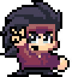
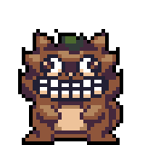
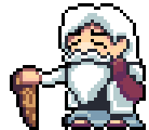
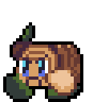
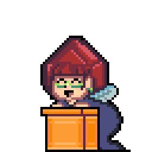
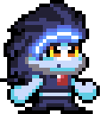
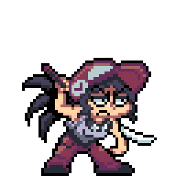

Sobre Nosotros
About Us
Somos un equipo de desarrolladores apasionados por los videojuegos. Nuestra misión es crear experiencias únicas y emocionantes para todos los jugadores. ¡Síguenos y descubre lo que tenemos para ofrecer!
We are a team of developers passionate about video games. Our mission is to create unique and exciting experiences for all players. Follow us and discover what we have to offer!
Rockbecca
Rockbecca
¿Qué es "Rockbecca"?
What is "Rockbecca"?
Es una carta de amor a los juegos de plataformas, o “el juego que me hubiera gustado encontrar hace 10 años”.
It’s a love letter to platform games, or “the game I wish I had discovered 10 years ago.”
En Cardiac Rest apreciamos el legado de sagas como Sonic, Wario Land o Kirby.
At Cardiac Rest we deeply appreciate the legacy of series like Sonic, Wario Land, and Kirby.
Todo esto nos llevó a lanzar Rockbecca, una aventura en la que acompañamos a Rebecca, la Elemental de Piedra.
All this led us to create Rockbecca, an adventure following Rebecca, the Stone Elemental.
Trama Principal
Main Plot
Las leyendas hablan de los Elementales, seres que mantienen el equilibrio de la naturaleza. Pero algo ha alterado ese equilibrio...
Legends speak of the Elementals, beings who maintain nature’s balance. But something has disrupted that harmony...
Oculto entre las montañas, el Templo de la Montaña guarda secretos — entre ellos, una estatua misteriosa.
Hidden in the mountains, the Temple of Stone hides secrets — among them, a mysterious statue.
¡POOF! ¡Era Rebecca, la Elemental de Piedra!
POOF! It was Rebecca, the Stone Elemental!
Rebecca
Rebecca

Puede que solo parezca una niña, pero tras ese rostro apasionado hay siglos de experiencia. Suele lanzarse a la aventura sin pensarlo dos veces y es muy apasionada sobre lo que hace. Tiene la habilidad de convertirse en una estatua de piedra así que ¡mejor no la provoques!
She may look like just a child, but behind that passionate face lie centuries of experience. She often throws herself into adventure without thinking twice and is very driven about what she does. She has the ability to turn into a stone statue, so don’t provoke her!
Tanukis
Tanukis

Habitantes del bosque vecino a las Montañas y fieles seguidores de la Elemental de Piedra. O al menos solían serlo... ¡Ten cuidado si se vuelven piedra!
Inhabitants of the forest near the mountains and loyal followers of the Stone Elemental. Or at least they used to be... Be careful if they turn into stone!
Masuta
Masuta

El sabio Elemental de la Madera. Las leyendas dicen que creó el Templo de Piedra tras escalar la Montaña Sagrada utilizando solamente su bastón para moverse.
The wise Wood Elemental. Legends say he created the Temple of Stone after climbing the Sacred Mountain using nothing but his staff.
Maderines
Woodlings

Parece que el Elemental de Madera también ha perdido a sus adeptos... Aunque no son tan agresivos, es importante tener cuidado con ellos.
It seems the Wood Elemental has also lost his followers... Although not as aggressive, it’s still important to be cautious around them.
Señorita Picarubí
Miss Rubee

Un hada madrina que desapareció hace tiempo. ¿Quizás puedas averiguar su paradero?
A fairy godmother who disappeared long ago. Perhaps you can uncover her whereabouts?
Robobecca
Robobecca

Este peculiar robot se parece sospechosamente a nuestra protagonista... Me pregunto quién lo habrá construido.
This peculiar robot looks suspiciously like our protagonist... I wonder who built it?
Valerie
Valerie

Esta chica dice ser una Elemental, pero ¿acaso no parece una simple humana? De todos modos, es mejor no bajar la guardia.
This girl claims to be an Elemental, but doesn’t she seem just like a human? Either way, it’s best not to let your guard down.
Curiosidades
Trivia
Plataformas, transformaciones y un diseño EXTREMADAMENTE DURO.
Platforms, transformations, and EXTREMELY HARD design.
La historia de este juego surge en la sexta edición de la Game Scholars Game Jam, organizada por la asociación de alumnos de la URJC llamada Game Scholars. La temática fue "extremadamente duro", lo cual nos llevó a la idea de crear un juego en el que el personaje pudiera convertirse en piedra.
The story of this game originates from the 6th edition of the Game Scholars Game Jam, organized by the URJC student association “Game Scholars.” The theme was “extremely hard,” which led us to the idea of a game where the character could turn into stone.
Inicialmente, este juego comenzó como un proyecto en Unity, pero cambiamos a GameMaker Studio 2, el cual seguimos usando hoy.
Initially, this game began as a Unity project, but we switched to GameMaker Studio 2, which we still use today.